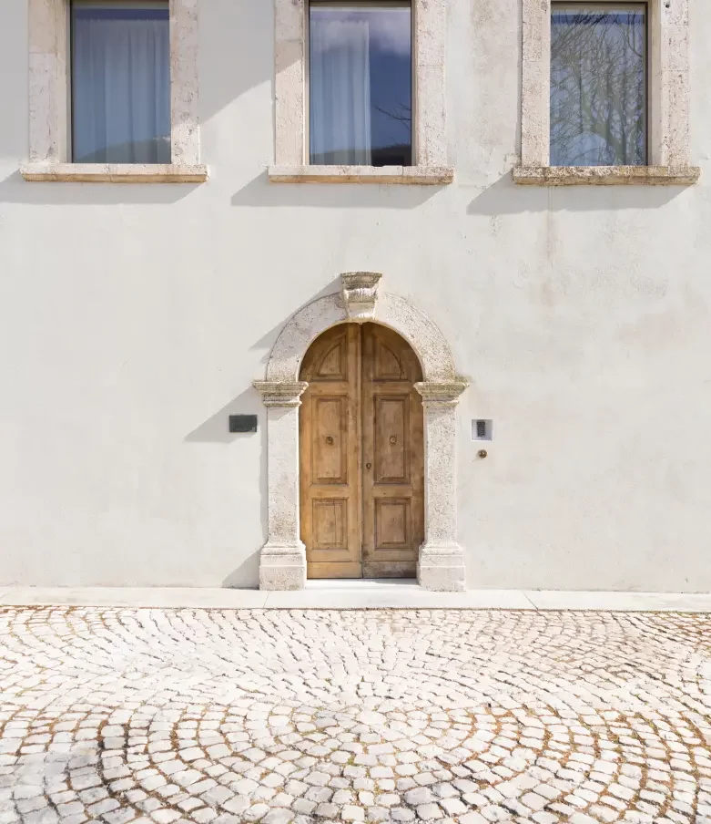
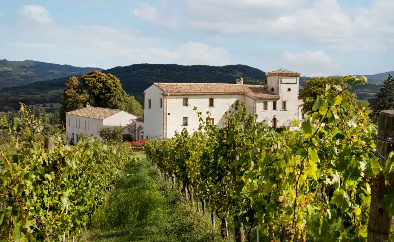
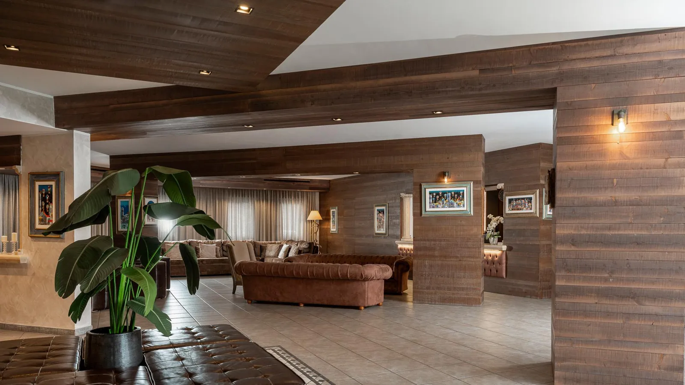
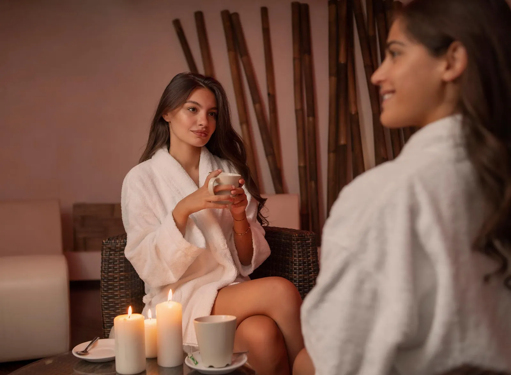
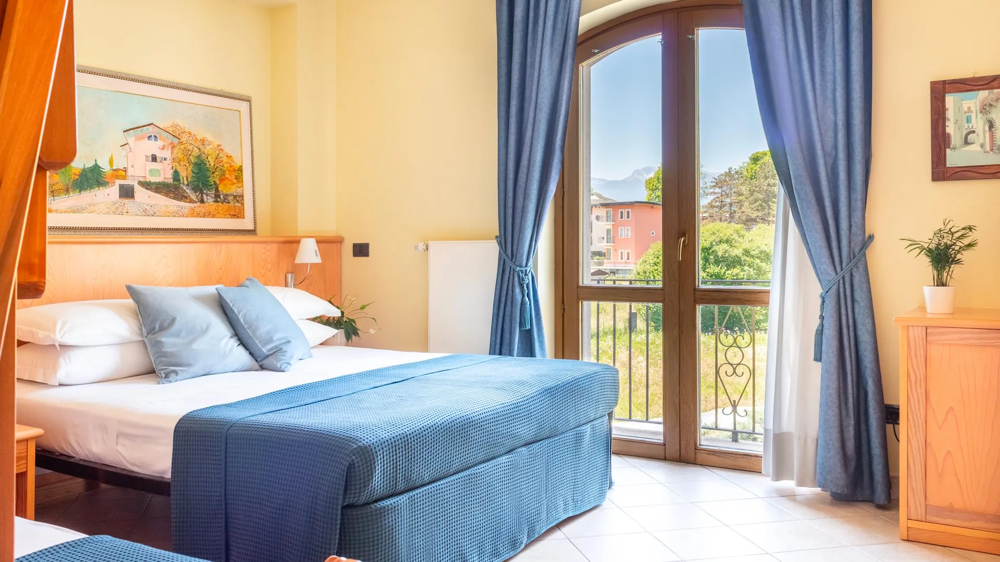

Eight rooms within a walk of three Michelin stars.
Casadonna itself is the obvious pick — Reale is on the property, one minute from your room. If its ~10 rooms are gone, the catalog opens into closest fall-backs along the Piana Santa Liberata corridor and into the historic centre.


Casadonna
Contrada Piana Santa Liberata · 16C monastery · ~10 named rooms
The half-board package — room, tasting menu for two, chef-led breakfast, optional wine pairing — is the canonical way to do this trip [1]. Reale is on the estate; the walk to your room is one minute [4]. Booking this dissolves every other constraint in the weekend.
At a glance — eight rooms, walking distance to dinner
Casadonna
Hotel Don Luis
Giulia's House
Sport Village
Hotel Natura
Il Giardino del Rio
Albergo Corradetti
A Casa di Giulia
If Casadonna is gone, here is your inventory.
Walked in order of proximity to Reale. The two closest sit on the same SS17 / Via Sangro corridor as Casadonna; the rest cluster around Castel di Sangro's historic centre — pleasant by day, taxi-only after a tasting menu.

Hotel Don Luis
Via Sangro 94 · Loc. Piano Cardillo
The only non-Casadonna option on the same Piana Santa Liberata locality, along the road into the estate. 4.3/5 across 495 Tripadvisor reviews; spotless and attentive [11].

Sport Village Hotel & Spa
Piazza del Mezzogiorno 6 · edge of town
Closest to a "proper hotel" in size in town. Indoor pool, Fluèntia Beauty & Spa, four restaurants [7]. Pick this if "weekend" means a swim and a massage too.
Hotel Natura
~1 km from centre · set back, quieter
Modern 4-star with a wellness centre — indoor pool and spa facilities, modern rooms [15]. 9.1/10 location score. Quieter than the SS17 corridor.

Albergo Il Giardino del Rio
Via degli Oschi 6 · steps from historic centre
Family-run by Davide, his mother Maria Paola, and father Enzo [13]. Ten spacious rooms, homemade breakfast praised universally [14]. ★ for charm-for-price.
Albergo Corradetti
~1.1 km · historic centre
Cheapest of the bunch and the only sub-$80 option. Booking.com guests give it 8.2; Tripadvisor's harsher 3/5 flags some dated rooms and road noise [17].
Giulia's House — Natura & Avventura
~700 m · self-catered apartment
The only self-catered option in the cluster — 2 bedrooms, living room, equipped kitchen, flat-screen TV. 9.8 by recent guests [20]. Useful for a four-person group splitting one base.
B&B A Casa di Giulia
Via Costa Calda 10 · 1.4 km from centre
Four rooms; spacious, with a terrace. 9.3/10 on Amimir [19]. Furthest of the picks — a 25-minute walk back from Reale at midnight is a stretch.
Two fault lines: distance to dinner and character of room.
Once Casadonna is off the table, the catalog splits cleanly. Closest beats character on the SS17 corridor; character beats closest in the historic centre — but the centre demands a taxi at 23:30.
If Casadonna sells out — stay close.
Hotel Don Luis is the only non-Casadonna option on the same Piana Santa Liberata locality (~400 m along Via Sangro) at a fraction of the price [11]. The best answer to "Casadonna is gone."
If "weekend" means spa and a swim too.
Sport Village is a full-service 4-star with indoor pool, Fluèntia spa, and four restaurants [7]. Pick this when dinner-at-Reale is the centrepiece of a broader rest, not the whole weekend.
If the historic centre is part of the holiday.
Il Giardino del Rio, Corradetti, and Casa di Giulia put you on foot for daytime sightseeing — basilica, piazzas, town wandering [6]. You're paying for that with a 15–25-minute walk along a state road back from Reale at midnight. Book a return taxi when you book dinner.
If you are four people splitting one base.
Giulia's House is the only self-catered option in the cluster [20] — two bedrooms, a kitchen, ~9 minutes from Reale. Useful when sleeping costs matter more than hotel polish.
Four notes that change the trip.
Closure window matters.
Reale and Casadonna dark 16 Mar – 9 Jun 2026 [3]. Any Saturday weekend in early 2026 must land before 14 March; otherwise next Saturday is 13 June.
Don't trust Google Maps.
Maps has routed visitors onto narrow bike/jogging trails near the property [22]. Use the Niko Romito site's own directions or follow SS17 / Via Sangro signs.
Cabs aren't on demand.
No public transport reaches Casadonna [22]. If you're not on-site, book the return taxi when you book dinner — small-town Abruzzo at 23:30 is not Uber territory.
Book the half-board direct.
Room + tasting menu for two + chef-led breakfast (optional wine pairing) is sold direct by Casadonna [1] — the cleanest way to lock room and table on the same date.
Keep reading — this is one wing of a four-part expedition.
Day-trips & activities within 30 km
PNALM hikes, the Marsican-bear corridor, Pescocostanzo, San Vincenzo al Volturno — what to fill the Saturday with before 20:00.
Special-character lodging within taxi range
If you relax "walking distance" to "no driving", the field opens to heritage stays — a Renaissance palazzo in Pescocostanzo, an 18C washhouse in town.
IT conferences within 30 km
A real null result: zero open IT conferences in 2026 within 30 km. The nearest is 110 km north in L'Aquila, Italian Capital of Culture 2026.